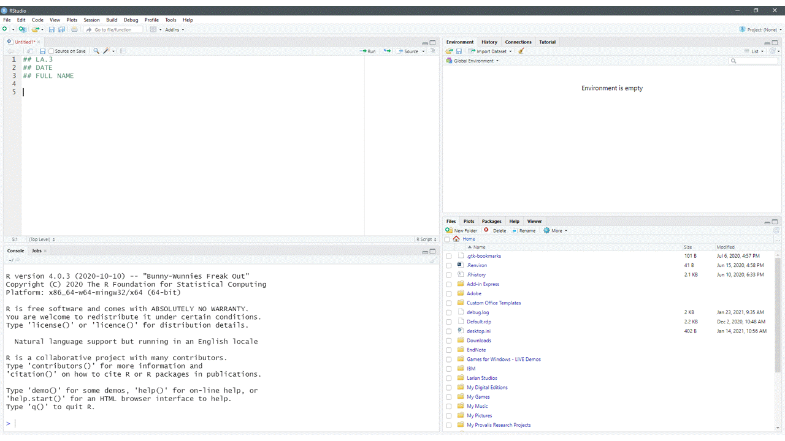
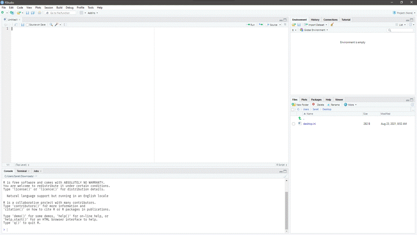

3 Assignment Setup
In this course you will use R for lab assignments. This chapter walks you through setting up R in preparation for completing assignments. Although you may have to refer to this chapter the first few times you set up R, you will soon become accustomed to the process and it will be a natural part of your workflow.
3.1 Open RStudio or Posit Cloud
Remember that R is the engine while RStudio is your dashboard. If you are using Posit Cloud, your engine is already integrated and you only need to navigate to the dashboard (i.e., Posit Cloud website). When you head out in a car, you don’t start by tinkering with the engine. Instead, you use the car via its dashboard.
Similarly, we will interact and use R through RStudio or Posit Cloud.
3.2 Create a new R script
To start a new R script, use the File menu or the shortcut keys Ctrl + Shift + N (Windows) or Cmd + Shift + N (Mac).1 You can also use your mouse to point-and-click to open a new file (Figure 3.1).
3.3 Prepare R script
To prepare your R script, use comments to type any relevant information about the script. Examples of relevant information include your name, your course, the semester during which you are enrolled in this course, the assignment name.
Comments in R are denoted by the hashtag symbol, #.
## This is a comment.Once you have included information about your script as comments, you should set your working directory (Figure @ref(fig:wd)). You can use the command setwd() to do this or the shortcut keys: Ctrl + Shift + H (Windows/Mac).

setwd().3.4 Creating foldable code sections
You can also create sections of foldable code in RStudio (Code > Insert Section…). The figure below shows you how. Once you have created a section, you can collapse it by clicking the arrows next to the line numbers on the

3.5 Install and load packages
Next, you need to install and load the R packages (see @ref(packages)) you will be using for this R session. Refer to section @ref(packages) for more information about installing vs. loading packages.
Remember that you only need to install packages once but you need to load packages each time you open R.
The functions to install and load packages are install.packages() and library(), respectively.
## Install the tidyverse package
install.packages("tidyverse")
## Load the tidyverse package (after installing)
library(tidyverse)3.6 Set working directory and read/load data into R
Once you have installed and loaded the packages that you will need to complete your assignment, you need to set your working directory (the path shown below is specific to your computer–replace c:/Users/SaraK/COMM-3710 with the path to the working directory that you created on your computer for this course).
You can use the keyboard shortcut in RStudio (Win/Mac: Ctrl + Shift + H) or use the setwd() function.
## Set the working directory to my working directory
setwd("c:/Users/SaraK/COMM-3710")
## Read data from dataset.csv file into R (note the file name of your dataset
## might be different)
dataframe_name <- read_csv("dataset.csv")You can replace dataframe_name with a name of your choice.
3.7 Saving your R script
Be sure to save your work often.
You are likely familiar with file types like .docx (Word documents), .pdf (PDF documents), and .txt (text files). If you have not worked with R prior to enrolling in this course, you may not have encountered files with the extension .R.
Files with a .R extension are known as R scripts. As noted in Section @ref(tour), a R script is simply a text file containing a set of commands and comments.
To save your script, click the icon in RStudio or use the File menu (Figure @ref(fig:fig-save)). Give the file a sensible name and click Save. The file will be saved as

3.8 Assignment R script checklist
Be sure you have at least the following components in your R script. This list is not comprehensive. It represents the minimal requirements for your R script.
- Full name and student ID #
- Assignment name/number (e.g., LA.1)
- Annotations explaining your R code
- R command to set working directory
- R command to install (if necessary) and load packages
- R commands necessary for completion of your assignment
Keyboard shortcuts are available under Tools \(\rightarrow\) Keyboard Shortcuts Help.↩︎